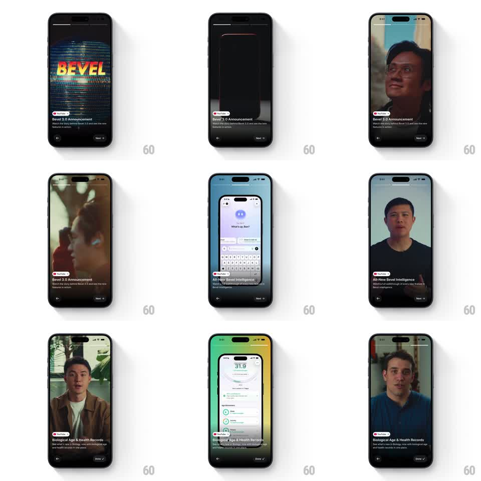

Media
Frame-by-frame

Rebuild this interaction 1:1: Bevel's what's-new story card - a fullscreen story player with segmented progress, autoplaying video per step, a bottom info card with the feature title, and Next/Done buttons to step through the showcase.

Rebuild this interaction 1:1: Bevel's what's-new story card - a fullscreen story player with segmented progress, autoplaying video per step, a bottom info card with the feature title, and Next/Done buttons to step through the showcase.
## Integration
Integration: stack-agnostic spec - springs given as stiffness/damping, timed motions as duration + curve; map every value to your framework and animation library of choice.
## Scene
Story viewer over a dimmed app: segmented progress bar pinned top, fullscreen video canvas behind, and a bottom sheet card holding a source tag, the step title ("Bevel 3.0 Announcement", "All-New Bevel Intelligence", "Biological Age & Health Records"), a one-line description, and Back / Next buttons.
## Motion spec
Pattern: story stepper - auto-advancing segmented progress with tap-to-next.
- Each step's progress segment fills linearly over the step duration (~5s); completed segments fill solid, upcoming stay at 20% opacity.
- Tapping Next (or right edge) cuts to the next step: video crossfades (250ms), bottom card content slides up and swaps (title exits up 12px while the new title enters from 12px below, 250ms, ease-out).
- Tapping Back restarts the current segment, then the previous one.
- Video for each step autoplays muted and loops.
- Final step swaps Next for a Done button with a check icon; tapping it dismisses the story (sheet slides down 300ms, video fades out 200ms).
## Calibration
- The bottom card never leaves; only its text cycles.
- Segment fill must match actual video progress, not a fake timer.
## Reduced motion
Steps crossfade without text slide (200ms); videos show poster frames with a play affordance instead of autoplay.
## Don't miss
- First frame carries the glitchy "BEVEL" logo ident - it belongs to step 1's video, not the UI chrome.
- Done appears only on the last step.